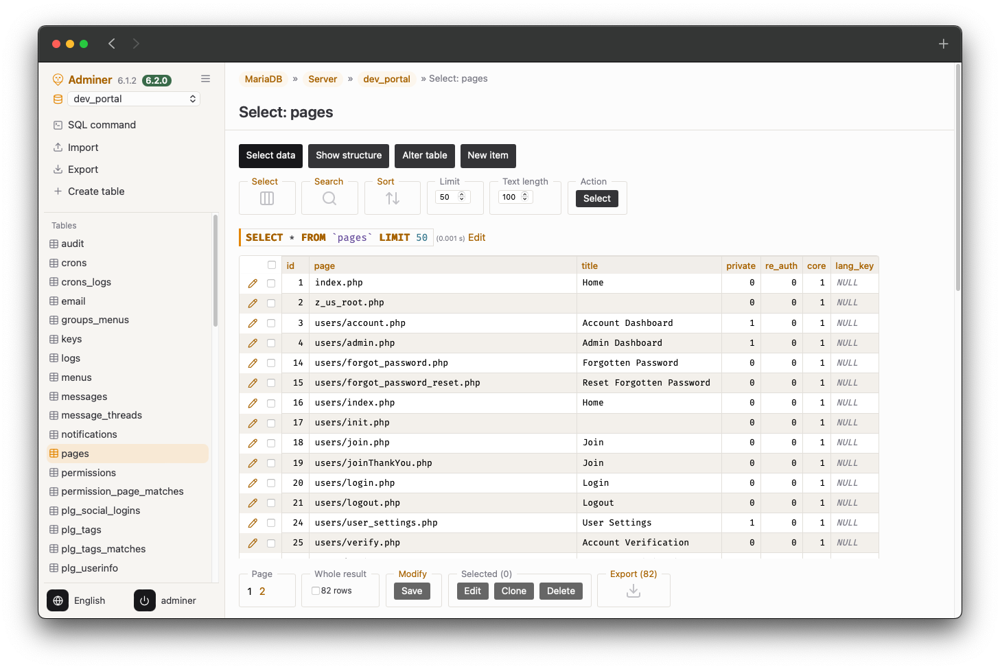

A clean, straightforward theme for Adminer, named after the barn owl: warm off-white and warm grey, with a few tawny orange accents.

First, ensure you have Adminer installed. If not, get a copy here. Then download the adminer.css file for Tyto Alba [ Download Tyto Alba ] or use the following curl command:
curl -O https://raw.githubusercontent.com/benediktsattler/tytoalba/main/adminer.cssThen put the file adminer.css alongside adminer.php or copy it to the same directory that contains Adminer on your web server.
Optional: the environment marker plugin frames production, staging and backup connections in their own color, so you always know where you are.
You can find Tyto Alba on GitHub.